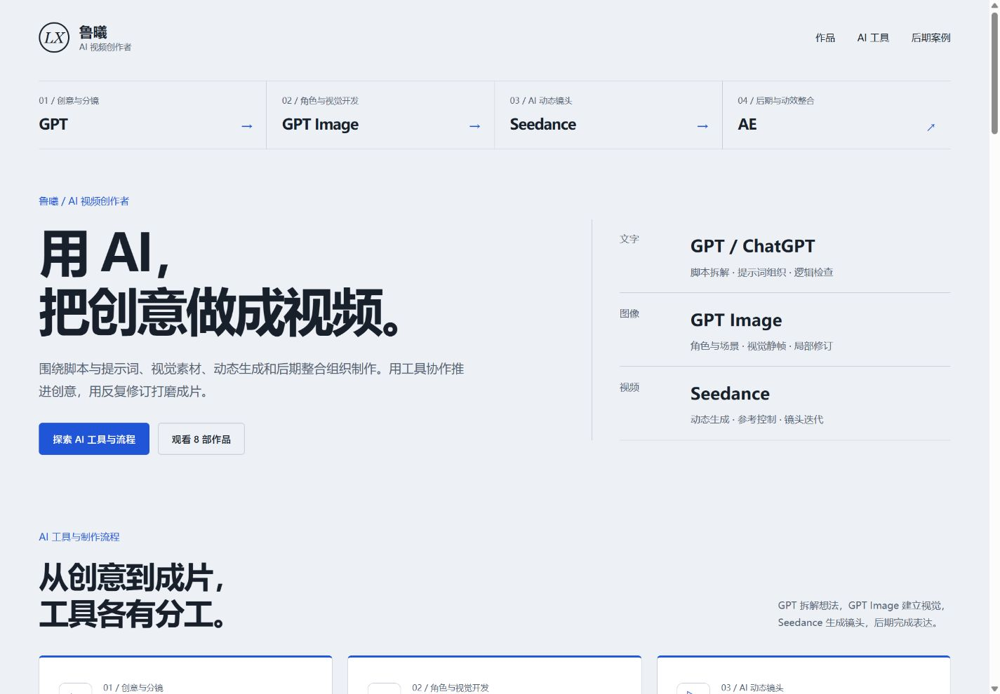
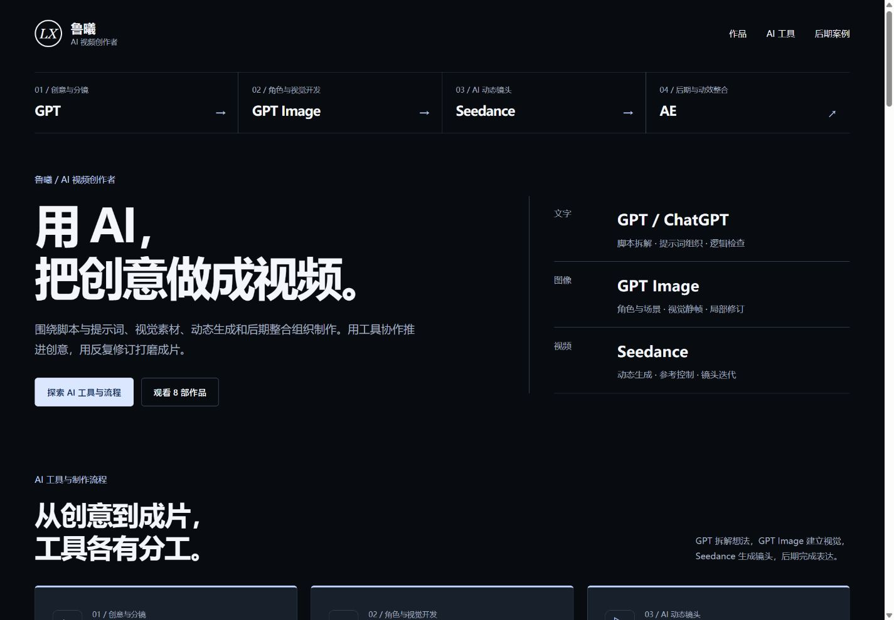
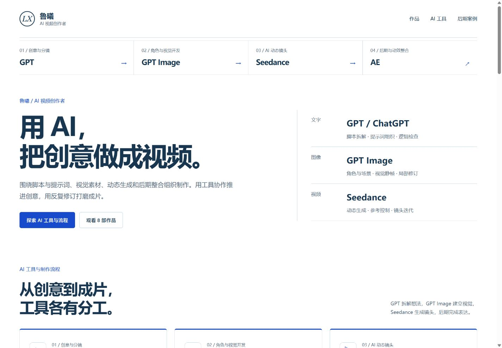

均衡展示版适合综合投递 / 推荐
均衡展示版
优先展示 GPT、GPT Image、Seedance 的协作流程，再呈现作品。
打开此版本版本对比
每个版本以 AI 工具与流程为核心，保留 8 部真实短片与技术案例。可先比较整体气质，再选择投递版本。

均衡展示版适合综合投递 / 推荐
优先展示 GPT、GPT Image、Seedance 的协作流程，再呈现作品。
打开此版本
影像展映版适合作品初筛
深色工具展示与影像展映结合，重点呈现 AI 创作能力。
打开此版本
简洁投递版适合快速阅读
白底紧凑排版，先读 AI 工具流程，再浏览作品与后期补充。
打开此版本新增镜头拆解、关键帧定位、生成控制检查要点及有项目脚本依据的 AE 数字滚动案例。保留视频原比例、按需加载、独立播放和键盘关闭。
原始模型、提示词、个人分工、生成迭代次数及投放结果尚未获得完整制作记录，页面不填写未经确认的数据。